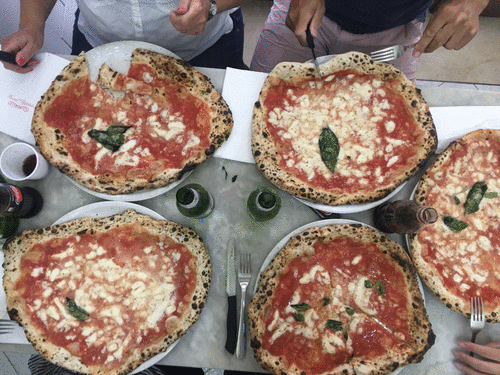

# Create a character-vector object
napoletana <- c("mozzarella", "tomato", "anchovy")
tl;dr
I bought Hadley Wickham’s Advanced R book1 to help me better understand R’s quirks. Can names and values (chapter 2) be explained with a contrived pizzeria analogy?2
A pizza by any other name
Welcome to the pizzeria. It’s called ‘La PizzRia’ because our owner likes to code and is really lazy at puns.
Toppings as vectors
Our specialty (and only!) pizza is pizza alla napoletana, which is topped with mozzarella, tomatoes and anchovies.
The English version of the menu calls it ‘Neapolitan’ pizza, but it’s the same thing.
neapolitan <- napoletana # copy the object
all(neapolitan == napoletana) # they're equal[1] TRUEWe store our unique sets of pizza toppings in a special recipe book. If you look up ‘napoletana’ and ‘Neapolitan’ in the book’s index, you’ll see they point to the same recipe.
# The {lobstr} package helps understand object structure
library(lobstr) # after install.packages("lobstr")
# Get the specific object 'address' in your computer's memory
# Both names point to the same object
obj_addr(napoletana) # original object[1] "0x129af4728"obj_addr(neapolitan) # the copy[1] "0x129af4728"Basically, the pizzaiolos don’t care: different names, same pizza. The recipe codes are the same.
Advanced R, p19
“The object, or value, doesn’t have a name; it’s actually the name that has a value.”
Copying a recipe, modifying it
We recently added pizza pugliese to the menu. We copied our napoletana in the recipe book and then modified it to have onions instead of anchovies.
pugliese <- napoletana # copy the object
all(pugliese == napoletana) # the objects are the same[1] TRUEpugliese[[3]] <- "onion" # modify the third element
pugliese == napoletana # they're no longer the same[1] TRUE TRUE FALSEWhen we look up these names in the index of our recipe book, we see that they point to different places, despite having copied the napoletana to get the pugliese.
# Now the names point to different objects
# We modified the copy, so it becomes a new object in memory
obj_addr(napoletana) # original object[1] "0x129af4728"obj_addr(pugliese) # the modified copy[1] "0x12b32ec68"Advanced R, p22
“This behaviour is called copy-on-modify.”
So, here’s our full pizza lineup in Italian and English.
apulian <- pugliese # specify English name for the pugliese
# A comparison of the pizza object structures
knitr::kable(
tibble::tribble(
~Language, ~Name, ~`Toppings`, ~`Recipe code`,
"ITA", "Pizza alla napoletana", napoletana, obj_addr(napoletana),
"ENG", "Neapolitan pizza", neapolitan, obj_addr(neapolitan),
"ITA", "Pizza pugliese", pugliese, obj_addr(pugliese),
"ENG", "Apulian pizza", apulian, obj_addr(apulian)
)
)| Language | Name | Toppings | Recipe code |
|---|---|---|---|
| ITA | Pizza alla napoletana | mozzarella, tomato , anchovy | 0x129af4728 |
| ENG | Neapolitan pizza | mozzarella, tomato , anchovy | 0x129af4728 |
| ITA | Pizza pugliese | mozzarella, tomato , onion | 0x12b32ec68 |
| ENG | Apulian pizza | mozzarella, tomato , onion | 0x12b32ec68 |
Pizza alla napoletana and its copy, Neapolitan pizza, point to the same recipe code.
Pizza pugliese was a copy of pizza alla napoletana, but it now points to a different recipe code. Why? An element was changed, anchovies to onions, so a new recipe code was required.
Finally, Apulian pizza is a copy of the pizza pugliese recipe, so they both point to the same unique topping set.
Toppings as lists
Our knowledge management system was, however, a bit inefficient: the mozzarella and tomato toppings existed twice in our recipe book; once for each pizza.
So we decided to update our recipe system to store each topping separately, each with its own special reference code too.
Again, we wrote down the pizza napoletana toppings, copied them, then switched the anchovies for onions. Like in our old system, the two pizzas differ in their third element.
# Toppings now as list elements
napoletana <- list("mozzarella", "tomato", "anchovy")
pugliese <- napoletana # make a copy
identical(pugliese, napoletana) # they're the same[1] TRUEpugliese[[3]] <- "onion" # make a change
identical(pugliese, napoletana) # now they're different[1] FALSESo in the new system, each topping has its own unique ingredient code. This means both pizza recipes point to the same ingredient codes for tomato and mozzarella.
# Compare addresses in memory for the lists
# Each 'block' below is a list object (pizza)
# Each element is a character vector (topping)
ref(napoletana, pugliese)█ [1:0x11ab4fb38] <list>
├─[2:0x12a21e6a8] <chr>
├─[3:0x12a21e638] <chr>
└─[4:0x12a21e600] <chr>
█ [5:0x11ab55d68] <list>
├─[2:0x12a21e6a8]
├─[3:0x12a21e638]
└─[6:0x12a21e4b0] <chr> Basically, our pizza names point to pizza recipes that themselves point out to toppings.
Advanced R, p25
“This list is more complex [than a vector] because instead of storing the values itself, it stores references to them.”
This means we can be more efficient in storing our pizza recipes: we write down ‘mozzarella’ and ‘tomatoes’ only once. This could become much more efficient when storing more than the two pizzas we have on La PizzRia’s menu.3
Customer orders as data frames
How do we manage orders? Wait-staff write down each order in a column, with a row for each topping.
Advanced R, p26
“Data frames are lists of vectors.”
Let’s say a couple orders a pizza napoletana and a pizza pugliese.
# Create a data.frame, which is a list of vectors
# Column behaviour is vector behaviour
order <- data.frame(
napoletana = c("mozzarella", "tomato", "anchovy"),
pugliese = c("mozzarella", "tomato", "onion")
)
order napoletana pugliese
1 mozzarella mozzarella
2 tomato tomato
3 anchovy onionAs we know, these pizzas both have mozzarella and tomatoes, but the third topping is different.
But wait: the customer who ordered the napoletana is hungry for more anchovies!
order_update <- order # copy the data.frame object
order_update[3, 1] <- "anchovy (extra)" # modify the new object
order_update napoletana pugliese
1 mozzarella mozzarella
2 tomato tomato
3 anchovy (extra) onionWe use a code reference system for our orders too and it works just like our old recipe system.
Since one of the pizza orders was changed, our reference code for the entire order was changed too.
The napoletana was modified after it was copied, so the recipe code for that pizza was updated. The pugliese didn’t change, so its code was maintained.
# Compare the data.frame structures
# Modified column gets new code, object gets new code
# Second column unchanged, code stays the same
ref(order, order_update)█ [1:0x12abc7548] <df[,2]>
├─napoletana = [2:0x12c1de9f8] <chr>
└─pugliese = [3:0x12c1de908] <chr>
█ [4:0x129ba3408] <df[,2]>
├─napoletana = [5:0x129d1c948] <chr>
└─pugliese = [3:0x12c1de908] Advanced R, p26
“If you modify a column, only that column needs to be modified.”
The mozzarella is especially bountiful this year; the waiter suggests both patrons take advantage.
They strongly agree. The order is copied once more and the waiter modifies the ‘cheese row’ for both pizzas.
order_final <- order_update # copy the object
order_final[1, 1:2] <- "mozzarella (extra)" # modify row one of both columns
order_final napoletana pugliese
1 mozzarella (extra) mozzarella (extra)
2 tomato tomato
3 anchovy (extra) onionAltering the cheese row means both pizza columns are copied and given new codes. Of course, the order gets a whole new code of its own because the toppings were changed.
# Compare data.frame structures again
# All columns modified, so copies made
# data.frame and column memory locations all differ
ref(order, order_final)█ [1:0x12abc7548] <df[,2]>
├─napoletana = [2:0x12c1de9f8] <chr>
└─pugliese = [3:0x12c1de908] <chr>
█ [4:0x1188f7b88] <df[,2]>
├─napoletana = [5:0x11ab42df8] <chr>
└─pugliese = [6:0x11ab42da8] <chr> Advanced R, p27
“If you modify a row, every column is modified, which means every column must be copied.”
Buon appetito!
Il conto
So can names and values be explained with this analogy?
Kinda? The basic premise is there: names and pizzas, names and values, etc. But it’s definitely contrived. Why are wait staff writing down pizza orders in a dataframe, etc?
I’ve also deceived you with some ‘polite fiction’, in Hadley’s words. In a numeric vector, the name points to the values. In a character vector, the name actually points to a vector of pointers, which themselves reference unique character strings.
Advanced R, p27
“R actually uses a global string pool where each element of a character vector is a pointer to a unique string in the pool.”
But I don’t think that’s a big deal for getting the point across.
Anyway, your order’s here.
Mangia! Mangia!
Environment
Session info
Last rendered: 2023-07-21 19:28:58 BSTR version 4.3.1 (2023-06-16)
Platform: aarch64-apple-darwin20 (64-bit)
Running under: macOS Ventura 13.2.1
Matrix products: default
BLAS: /Library/Frameworks/R.framework/Versions/4.3-arm64/Resources/lib/libRblas.0.dylib
LAPACK: /Library/Frameworks/R.framework/Versions/4.3-arm64/Resources/lib/libRlapack.dylib; LAPACK version 3.11.0
locale:
[1] en_US.UTF-8/en_US.UTF-8/en_US.UTF-8/C/en_US.UTF-8/en_US.UTF-8
time zone: Europe/London
tzcode source: internal
attached base packages:
[1] stats graphics grDevices utils datasets methods base
other attached packages:
[1] lobstr_1.1.2
loaded via a namespace (and not attached):
[1] digest_0.6.33 utf8_1.2.3 fastmap_1.1.1 xfun_0.39
[5] fontawesome_0.5.1 magrittr_2.0.3 glue_1.6.2 tibble_3.2.1
[9] knitr_1.43.1 pkgconfig_2.0.3 htmltools_0.5.5 rmarkdown_2.23
[13] lifecycle_1.0.3 cli_3.6.1 fansi_1.0.4 vctrs_0.6.3
[17] compiler_4.3.1 rstudioapi_0.15.0 tools_4.3.1 pillar_1.9.0
[21] evaluate_0.21 yaml_2.3.7 crayon_1.5.2 rlang_1.1.1
[25] jsonlite_1.8.7 htmlwidgets_1.6.2Reuse
CC BY-NC-SA 4.0